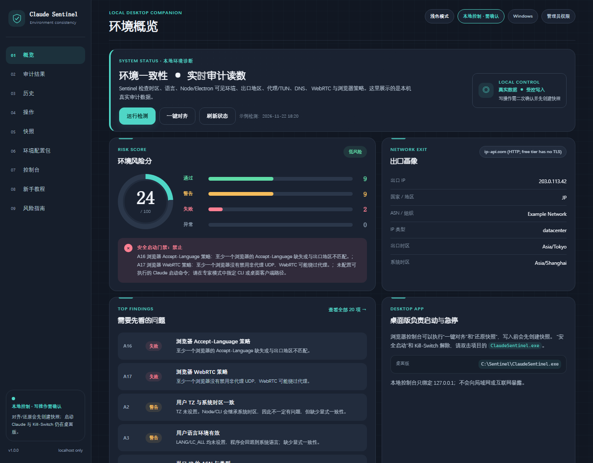
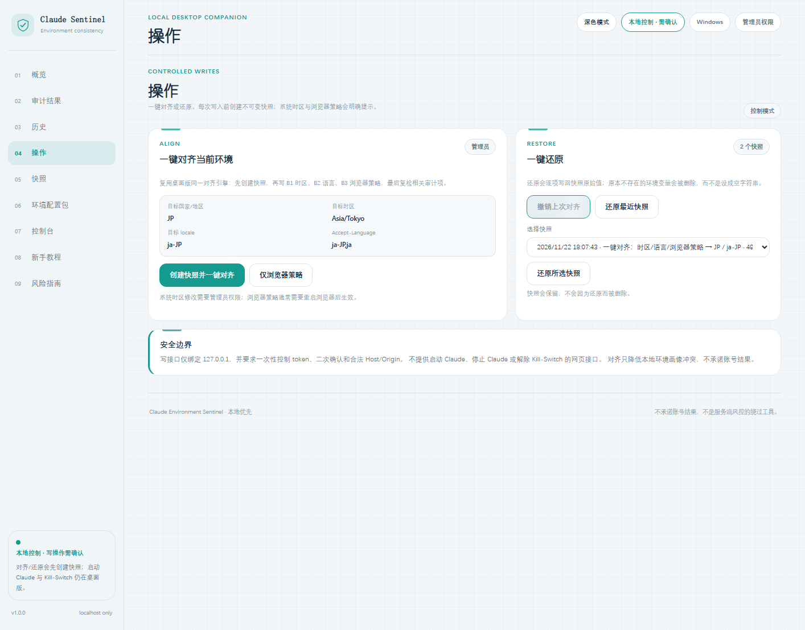

01
环境画像互相打架
系统在亚洲、语言是中文、浏览器 Accept-Language 却来自另一个地区，出口 IP 又指向第三个地方。
Claude Environment Sentinel 是一个面向 Windows 的本地环境一致性工具箱： 20 项审计、可回滚的一键对齐、历史趋势与 Kill-Switch。 它不读取账号凭证，也没有遥测。
无需预装 Python · 解压即用 · MIT 开源 · 未签名构建

Sentinel 处理的是“本地环境画像”这一层：时区、语言、浏览器策略、出口地区与设备可见信号是否自洽。
系统在亚洲、语言是中文、浏览器 Accept-Language 却来自另一个地区，出口 IP 又指向第三个地方。
时区、LANG/LC_ALL、浏览器策略散落在不同位置。改之前没有快照，改坏了很难逐项恢复。
很多“优化”靠感觉。Sentinel 把证据、原始采样值、历史变化和门禁原因摊开给你看。
桌面版和本地浏览器控制台共享同一套审计、对齐和快照引擎。
时区、语言、Node/Electron、出口 IP、代理/TUN、DNS、WebRTC、浏览器策略、时钟偏差与漂移基线。
B1 时区、B2 LANG/LC_ALL、B3 Chrome/Edge 策略；系统时区修改必须显式确认。
写入前创建带 SHA-256 的不可变快照；还原时原本不存在的变量会被删除，不是置空。
安全启动后监控出口、代理内核与 TUN；异常时终止进程树、阻断出站并锁定，直到手动解除。
按场景保存时区、语言、浏览器策略和代理标签；绝不保存密码、Cookie、Token 或会话文件。
Web 控制台提供历史对比、趋势、风险分解、推荐处置、导出 JSON 与打印/PDF。

对齐不是“点一下就跑”。它先创建快照，再逐项写入，最后复检相关审计项。
python -m sentinel console --verbose或双击 ClaudeSentinel.exe降低可避免的本地环境冲突，不承诺账号结果。
内置 CPython/Tk 运行时，不需要预装 Python。未签名构建，SmartScreen 可能提示未知发布者。
使用 Windows 便携版不需要。便携包内含运行时。从源码运行才需要 Python 3.10+ 和 Tkinter。
不会。Sentinel 不读取 Claude 登录态、Cookie、Token、会话文件或浏览器账号资料；它只读取环境变量、系统时区、浏览器语言/WebRTC 策略、网络元数据和客户端版本。
不能。Sentinel 只降低本地环境画像冲突这一层可避免风险，不承诺账号结果，也不是服务端风控的绕过工具。
对齐前会创建不可变快照，还原时逐项写回；原本不存在的环境变量会被删除。系统时区和防火墙操作需要管理员权限。
MIT License。源码、Issue 和 Release 都在 GitHub：DaiYiqq/claude-environment-sentinel。